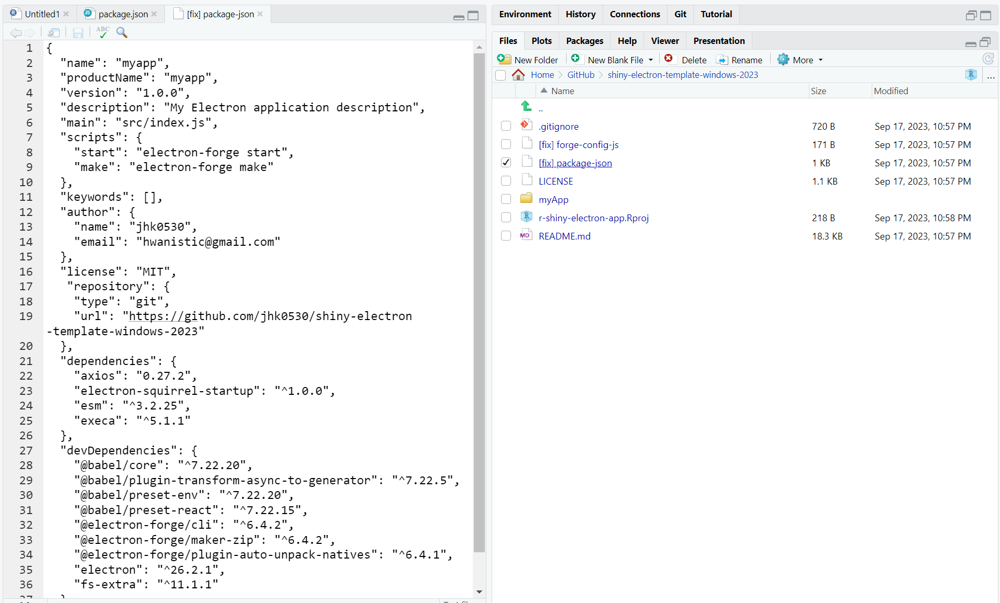

개요
이번 글에서는 R Shiny 앱을 별도의 설치나 외부 연결 없이 폐쇄 환경에서도 실행할 수 있는 (Standalone) exe 파일로 패키징하는 과정을 소개합니다.
Standalone App
먼저 글의 맥락을 더 효과적으로 전달하기 위해 Standalone App에 대해 간단히 정의해보겠습니다.
An app that can run independently without any external help.
즉, 외부에 의존하지 않고 독립적으로 실행 가능한 앱으로 정의하고 싶은데요.
여기서 외부에는 보통 Shiny를 실행하기 위해 쓰이는 웹 브라우저(크롬)가 포함될 수 있습니다.
한편, R과 Rstudio 또한 Shiny를 실행하기 위해서 (로컬에서) 필요한 외부로 볼 수 있습니다.
이러한 외부의 도움을 받지 않고, 다운로드 이후 압축만 풀어서 바로 실행할 수 있는 것을 Standalone App이라고 하며, 이러한 예시에는 (아는 사람은 아는 ㅎㅎ) 피카츄 배구.exe가 있습니다.

출처: https://gbworld.tistory.com/1362
이후 내용에서 소개되는 Shiny를 standalone app으로 만드는 것은 일반적인 R Shiny 개발과는 상당히 다르고 동시에 복잡합니다.
그렇다면 Standalone app으로 만드는 것은 Shiny를 사용자에게 제공하는 다른 방법들과 어떤 차이점이 있을까요?

이에는 여러가지를 생각해 볼 수 있지만 크게 2가지의 차이점이 있습니다.
- 사용자 경험
electron으로 만들어진 Standalone App은 Shiny를 제공하는 서버와의 네트워크 연결이 불필요합니다. Shiny를 사용하기 위해 브라우저를 열고 특정 URL에 접속하는 대신 설치된 프로그램을 실행하는 것으로 충분합니다.
이로 인해 네트워크와의 데이터를 주고 받는 과정에 리소스가 쓰이지 않고, 사용자의 (로컬 PC) 자원을 활용하기 때문에 살짝 더 좋은 퍼포먼스를 보일 수 있습니다.
- 폐쇄성 환경
또한 네트워크가 연결되지 않는다는 점은 shiny에 입력하는 값이 사용자의 PC 외부로 나가지 않고, 동시에 외부의 리소스가 PC에 들어오지 않는다는 이야기이기도 합니다.
그렇기 때문에 금융이나 병원등 망분리 / 폐쇄 되어 있는 개발 환경에서도 Shiny를 실행할 수 있고 더 뛰어난 보안성을 가지게 됩니다. (단, Shiny가 계산을 위해 외부의 API 같은 자원을 사용하려면 네트워크 연결이 필요합니다)
Electron
Electron (정확히는 electron.js) 은 크로미움 (크롬)과 node.js를 활용하여 html과 css, js 같은 웹 개발 결과물 (shiny가 이에 포함됩니다) 을 임베디드 형태로 만들 수 있는 프레임워크입니다.

Standalone App을 만들기 위해서 electron의 기술적인 원리를 이해할 필요는 없지만, 흐름을 표현하면 아래와 같습니다.

이 기술을 활용하여 shiny로 standalone app을 만들려는 시도는 꽤 오래 전부터 있었고, 2020년에 공유된 Turn a shiny application into a tablet or desktop app 아티클도 있지만, 관련된 자료들이 2022년을 마지막으로 아카이브되어 업데이트 되지 않았기 때문에 최신의 내용을 반영한 업데이트가 필요했습니다.
차라투에서는 연구를 통해 기존의 내용 중 일부를 최적화하고, 최근 내용들을 반영한 뒤, Windows와 M1 Mac 2개의 OS에서 Standalone App을 개발하여 분리 환경에서 Shiny를 사용해야 하는 (공공기관을 포함한) 고객에게 제공하였고, 이후 개발에 활용할 수 있는 템플릿과 가이드를 제공하고 있습니다.
국내에는 윈도우 사용자가 더 많기 때문에, 이번 글에서는 윈도우를 기준으로 방법을 소개합니다.
개발 준비
Standalone shiny app을 개발하기 위해 shiny 개발에 필요한 R과 Rstudio 외에 추가 설치가 필요합니다.
1. node.js 설치
글이 작성되는 23년 9월을 기준으로, LTS인 18.17.1 버전을 설치합니다.

이제 Rstudio를 관리자 권한으로 실행합니다. (아이콘을 오른쪽 클릭 후 선택)
정상적으로 설치가 되었다면 Rstudio의 터미널에서 node -v, npm -v를 실행하여 설치 버전을 확인할 수 있습니다.
2. electron-forge 설치
electron-forge는 electron을 조금 더 쉽게 사용할 수 있게 하는 패키지라고 생각하셔도 좋습니다.
이는 npm을 사용해 (R의 install.packages와 유사) 설치할 수 있으며, 마찬가지로 Rstudio의 터미널에서 아래의 명령어를 입력하여 설치합니다.
npm i -g @electron-forge/cli
3. 템플릿 포크 / 클론
차라투 github에서 제공하는 템플릿을 자신의 계정에 포크 후, 클론하여 로컬 PC에 다운로드 받습니다.
https://github.com/zarathucorp/shiny-electron-template-windows-2023


4. R project 열기
템플릿 폴더의 shiny-elecgtron-template-windows-2023.Rproj를 Rstudio에서 실행합니다.
이제 Rstudio 터미널의 작업 디렉토리가 해당 프로젝트의 위치로 변경됩니다.
Electron App 만들기
1. electron app 템플릿을 설치
Rstudio의 터미널에서 npx create-electron-app myApp을 실행하여 템플릿을 설치합니다.
이때 myApp이 Standalone App의 이름이 되며 app을 제외한 다른 이름으로 변경할 수 있습니다.
정상적으로 실행되었다면 디렉토리에 myApp 폴더가 새롭게 생기는 것을 확인할 수 있습니다.

2. github 템플릿의 파일을 myApp으로 이동
electron app 에서 기본으로 제공하는 템플릿은 shiny를 개발하기에는 약간 다른 내용들이 있어서 차라투 github에 제공된 파일로 교체합니다.
이때 만들어진 myApp으로 이동해야 하는 파일은 아래의 5개입니다.
- shiny (폴더)
- src (폴더)
- add-cran-binary-pkgs.R
- get-r-win.sh
- start-shiny.R

이후 Rstudio의 터미널에서 cd myApp으로 디렉토리를 이동합니다.
3. Standalone R 설치
electron 에 포함 시킬 local R을 현재 프로젝트에 설치합니다.
단, 이때 기존에 사용중인 R의 버전과 동일한 버전을 설치해야 하며, 23년 9월에 최신 버전인 4.3.1을 기준으로 사용합니다.
local R은 Rstudio의 터미널에서 sh ./get-r-win.sh를 실행하는 것으로 설치할 수 있습니다.
정상적으로 실행되었다면 Done. 메세지와 함께 폴더에 r-win 이라는 폴더가 새롭게 만들어 진 것을 확인할 수 있습니다. r-win 내부의 구조는 아래와 같습니다.

4. Shiny 패키지 설치
예시에서 사용하는 shiny는 shiny 폴더의 app.R 코드를 사용합니다. (shiny 외의 다른 패키지를 사용하지 않는다면 해당 코드로 바꿔도 작동합니다) 이를 실행하기 위해 기본 R 에서 제공하는 패키지외에 (shiny를 포함한) 추가 CRAN 패키지를 설치합니다.
Rstudio의 터미널에서 Rscript add-cran-binary-pkgs.R을 입력하여 패키지를 설치합니다.
실행전 (기본 R 패키지)

실행후 (shiny를 포함한 패키지)

5. node 패키지 설치
package.json의 내용을 다음과 같이 [fix] package-json의 내용으로 복사 붙여넣기합니다.
이때 author와 repository는 본인의 내용에 맞게 수정해야합니다.

이후 Rstudio 터미널에서 npm install을 입력하여 패키지를 설치할 수 있습니다.
Shiny 실행 및 패키징
app.R은 개발 의도대로, 정상적으로 실행된다는 가정하에 Electron으로 shiny 를 실행하기 위해 Rstudio의 터미널에 electron-forge start를 입력합니다.

큰 문제 없이 실행이 되었다면 이제 electron-forge make로 패키지를 만들 차례입니다.(zip)
패키지 빌드를 위한 약간의 시간이 지난 후 out 디렉토리에서 앱과 zip 파일을 확인할 수 있습니다.
정리
이번 글에서는 Standalone의 특징과 electron을 활용하여 shiny를 standalone app으로 만드는 방법을 다뤄봤습니다.
Electron을 활용하여 Standalone Shiny app을 만드는 것은 소개된 것처럼 R외의 개발 지식을 필요로 하기 때문에 경험이 없다면 다소 복잡하게 느껴질 수 있습니다. (글에서 다루지 않은 내용들도 있습니다)
특히 electron 내부에서 local R과 electron을 위한 node 패키지들을 이미 포함해야 하기 때문에 간단한 shiny app도 용량이 200 메가바이트 정도부터 시작한다는 치명적인 단점도 존재합니다.
그럼에도 불구하고 이는 Standalone 특유의 몇가지 특징들이 있어 사용자의 환경에 따라 적합한 shiny 개발 방법으로 고려해볼 수 있는 선택지 중 하나입니다.
차라투에서는 R과 Shiny에 대한 컨설팅을 제공합니다. 진행중인 프로젝트 관련하여 도움이 필요하시다면 jinhwan@zarathu.com 으로 알려주세요!
Reuse
Citation
@online{kim2023,
author = {Kim, Jinhwan},
title = {Electron {forge를} {활용하여} {Standalone} {Shiny}
{Application} {제작하기}},
date = {2023-09-18},
url = {https://blog.zarathu.com/posts/2023-09-18-shinyexe/},
langid = {en}
}